Getting Started: Writing My First Apache UIMA Annotator
Getting Started: Writing My First UIMA Annotator
The "Getting Started: Writing My First UIMA Annotator" guide should help you to write your first UIMA™ annotator component. UIMA annotators are the analysis components that can be plugged into the UIMA framework to analyze unstructured information; for example an annotator could detect named entities in text.
Prerequisites
To work with this guide you need a working Eclipse installation with installed UIMA Eclipse plugins. If you haven't already installed Eclipse with the UIMA plugins, please refer to the UIMA documentation Setting up the Eclipse IDE to work with UIMA to install and set up your UIMA Eclipse environment. Please also install the UIMA examples into your Eclipse workspace since we refer to some of these in this guide; this is explained in the same chapter at section Setting up Eclipse to view Example Code.
Introduction
The annotator we will create in this guide is very simple. It uses a simple regular expression to detect room numbers in text documents (it is the same example as used in the UIMA documentation in the Annotator and Analysis Engine Developer's Guide). Although the task is very simple, it is sufficient to demonstrate how to write an UIMA annotator. For more detailed information about the annotator development, refer to the Annotator and Analysis Engine Developer's Guide
Creating and configuring an Eclipse project for UIMA annotator development
We first start with setting up an new Eclipse project to contain our annotator. First, we create an Eclipse project as shown here:
-
Create a new Java project in your Eclipse workspace called RoomNumberAnnotator. To do this select "File -> New -> Java Project" and use RoomNumberAnnotator as the project name. Also, in the Project Layout section, make sure the button to "Create separate folders for sources and class files" is checked.
-
Add the UIMA nature to the project by right-clicking on the "RoomNumberAnnotator" project and choose "Add UIMA Nature". Confirm the upcoming dialogues with "Yes" to add the UIMA nature, pressing "OK", next, to confirm the status message dialog. This will create a default directory layout of folders useful for annotator component development.
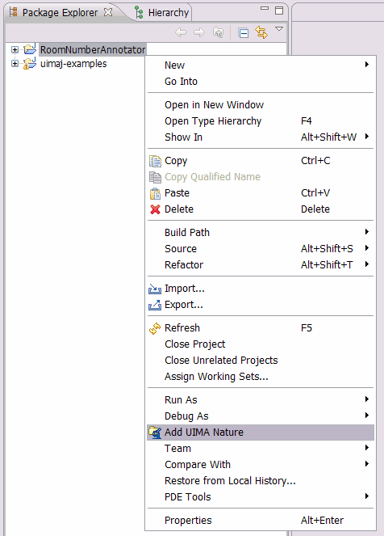
-
In the last step we add to your project the UIMA core libraries that we need to develop and run the annotator.
- Right-click to the RoomNumberAnnotator project and choose Build Path - Configure Build Path.
- Click the "Add Variable..." button, and select the "UIMA_HOME" variable. This variable should have been declared and set as part of your Eclipse setup, above. If it isn't, just add it now, using the Configure Variables, setting it to the home directory where you have UIMA installed.
- Click the "Extend..." button and chose the
uima-core.jarin "lib" directory. You could add other jars from the UIMA lib, but the uima-core.jar is the only one needed for this project. - Finalize all dialogues with the "OK" button.
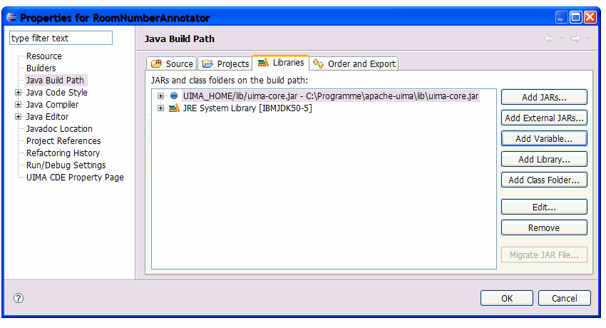
-
Right-click on the "desc" folder of your project and choose "New - Other".
-
Select "Analysis Engine Descriptor" from the "UIMA" folder and press "Next".
-
Enter "RoomNumberAnnotatorDescriptor.xml" as file name, and press "Finish".
-
This creates a new skeleton descriptor file and opens it in the UIMA Component Descriptor Editor plugin. For now, we just add the Java class name we will use later to implement the annotator. Use "org.apache.uima.tutorial.ex1.RoomNumberAnnotator" as Java class name. Select "File - Save" or push "CTRL-S" to save this descriptor. A warning/error message will appear saying that the classname you entered isn't found - that's true because we haven't defined it yet, so just say OK and proceed. The Component Descriptor Editor has many checks like this and will alert you if it finds things wrong, but it always will let you save your work, anyway.
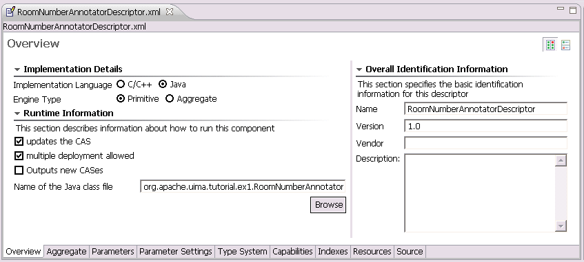
-
Open the descriptor using the UIMA Component Descriptor Editor (CDE) by right-click to the "RoomNumberAnnotatorDescriptor.xml" file and choose "Open With - Component Descriptor Editor"
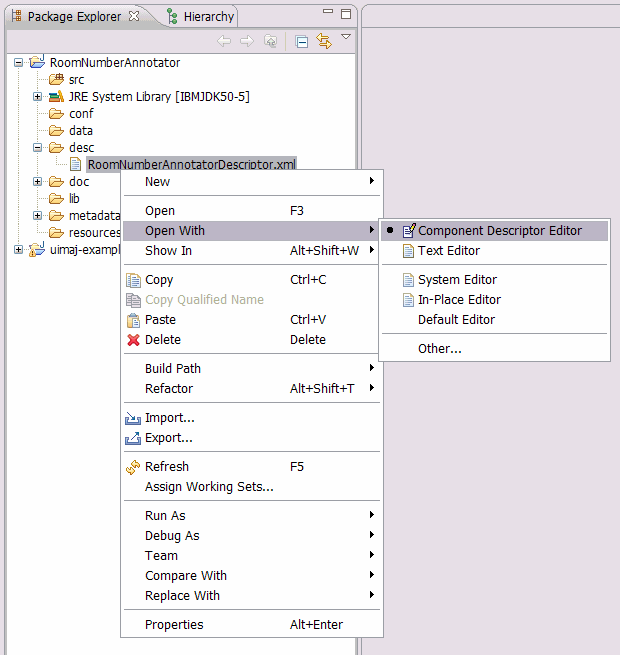
-
Select the "TypeSystem" tab at the bottom to show the type system definition page.
-
Press the "Add Type" button to add the new type. Use "org.apache.uima.tutorial.RoomNumber" as type name and finish with "OK". The supertype "uima.tcas.Annotation" is correct.
We just added the first type to our RoomNumberAnnotator type system. Now we want to add an additional
feature to the created type to store the annotation meta information.
-
Select the "org.apache.uima.tutorial.RoomNumber" type by clicking it.
-
Click the "Add..." button to add a feature to the type and specify "building" as feature name and "uima.cas.String" as range type. This means that the "building" feature is a String based feature.
You can use Eclipse "auto-complete" function for the super-type. For example, you may type an "s" (the first letter of "String", even in lower case), and then press the "CTRL-SPACE" key combination and see a list of suitable candidates - at which point you can pick one with the mouse.
Finish the dialog by clicking "OK".
-
Save the descriptor file
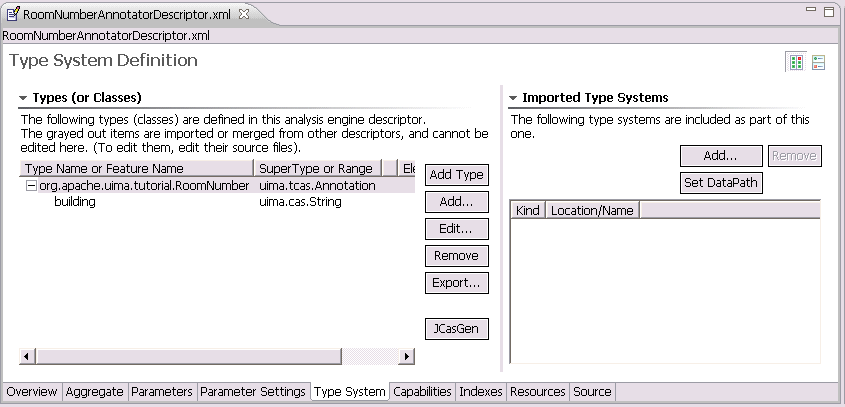
That's all - we defined the UIMA type system for the RoomNumberAnnotator that we use later when we implement the annotator code. -
Open the descriptor file in the Component Descriptor Editor and select the "Type System" tab.
-
Press the "JCasGen" button that will trigger the Java class generation. The generated classes will be added to the "src" folder of your project in a separate package.
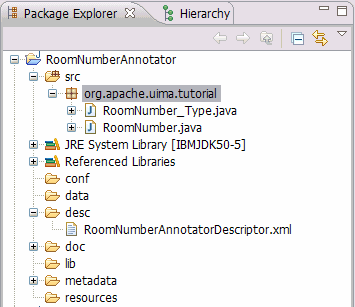
Now all pre-work is done and you can start implementing the annotator source code. -
Right-click on the "src" folder and select "New - Class".
-
A wizard dialog appears where you can specify the Java class information shown below. We will create a Java class called
RoomNumberAnnotatorthat inherits from the base class calledorg.apache.uima.analysis_component.JCasAnnotator_ImplBase. This is the base for all UIMA annotator implementations.Java class information:
- Package:
org.apache.uima.tutorial.ex1 - Name:
RoomNumberAnnotator - Superclass:
org.apache.uima.analysis_component.JCasAnnotator_ImplBase
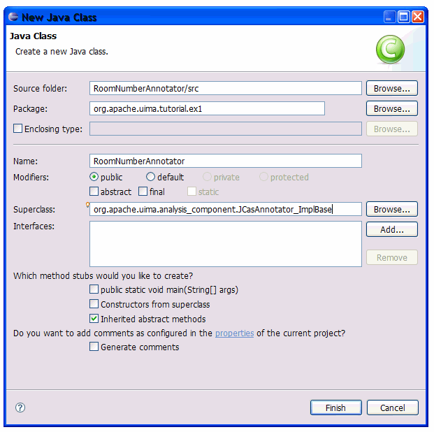
- Package:
-
Press the "OK" button to create the class and to finish the wizard.
The created Java class has a pre-defined method stub for the annotator -
Open the Eclipse "Run dialog"
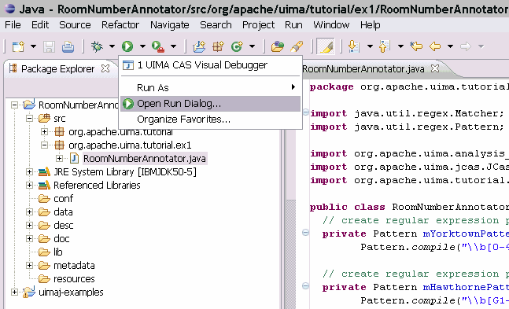
-
Expand "Java Application" in the left window and choose "UIMA CAS Visual Debugger". Now select the "Classpath" tab on the right.
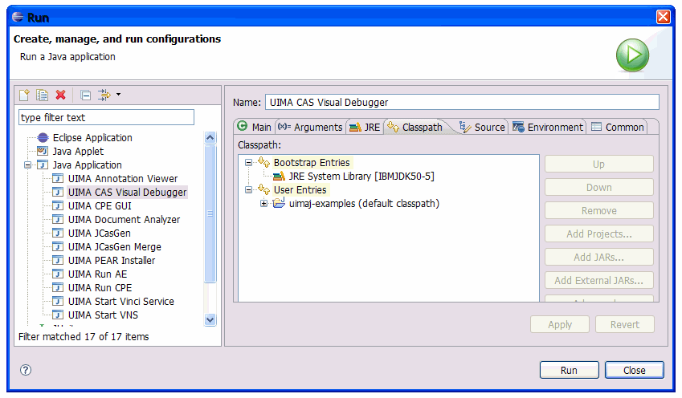
-
Select the "User Entries" in the classpath tab and press the "Add Projects..." button.
-
Mark the "RoomNumberAnnotator" project in the upcoming dialog and finish with "OK".
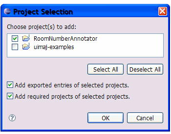
-
Run the CVD by selecting "Run".
-
Choose "Run - Load AE" and select the
RoomNumberAnnotatorDescriptor.xmlfile in thedescfolder of your Eclipse project. -
Copy and past the text below for testing to the text section of the CVD. This text content in passed to the annotator when running the component.
Upcoming UIMA Seminars April 7, 2004 Distillery Lunch Seminar UIMA and its Metadata 12:00PM-1:00PM in HAW GN-K35 April 16, 2004 KM I Department Tea Title: An Eclipse-based TAE Configurator Tool 3:00PM-4:30PM in HAW GN-K35 May 11, 2004 UIMA Tutorial 9:00AM-5:00PM in HAW GN-K35
-
To run the annotator on the specified text, choose "Run - RunRoomNumberAnnotatorDescriptor".
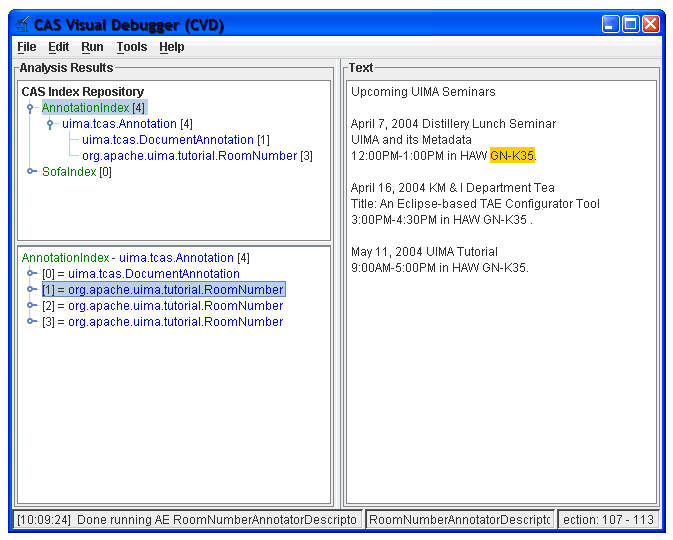
-
Right-click on the RoomNumberAnnotator project and call "Generate PEAR file".
-
Once the wizard is started with the first page, you have to specify an annotator component ID and the annotator descriptor file that is used to run the annotator component. The componentID is pre-filled and can be used as is. For the annotator descriptor file, use "Browse" and select the
RoomNumberAnnotatorDescriptor.xmlfile in thedescfolder of your project.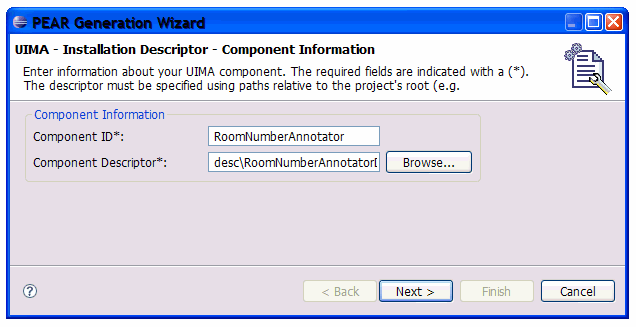
-
After adding these values, go to the next wizard page with the "Next" button. This page shows the classpath and environment configuration for the annotator. The default settings are sufficient in our case.
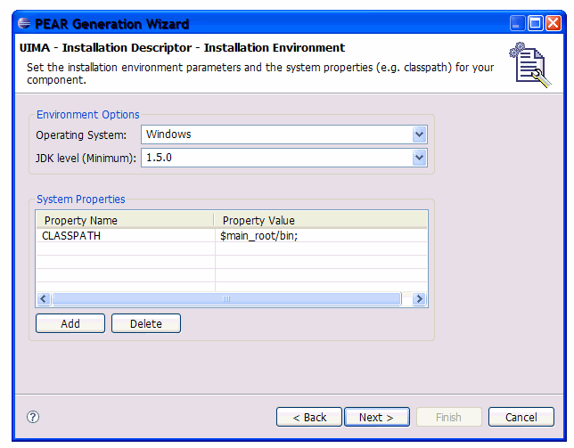
-
Choose "Next" to get to the last wizard page.
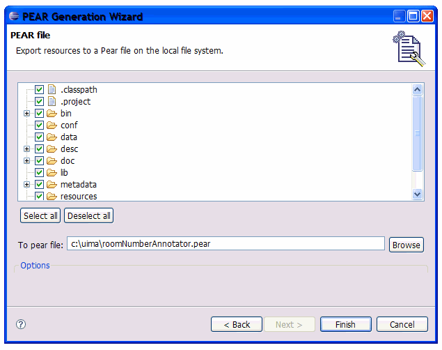
-
Run the PEAR package generation process by pressing the "Finish" button. Once the packaging is done, a message dialog comes up with a success message. The created PEAR package is available at the specified location.
Defining annotator types
Before we can start implementing the annotator we have to create some meta data for the annotator - the analysis engine descriptor. The analysis engine descriptor contains information about the annotator that is accessible without having access to the source code. It contains information like configuration parameters, data structures, annotator input and output data types and the resources that the annotator uses. The descriptor is also used by the UIMA framework to load the annotator. Details about creating XML descriptors can also be found in the UIMA documentation at Creating the XML Descriptor.
To create a new analysis engine descriptor:
Next, we will define the output types that the annotator produces. We have to do this before we start implementing the annotator code since we will use the definitions later in our implementation.
All the data that is produced by annotators or exchanged between annotator components is defined in the UIMA type system. The UIMA type system is part of the analysis engine descriptor file so that each user or application knows the types the annotator deals with. This is one of the main advantages of UIMA - the data structures are declaratively specified and are stored inside the UIMA framework. This increases the interoperability between components and allows including components developed using different programming languages.
To make the definition of types easier, the UIMA framework has some pre-defined types. One of
them is uima.tcas.Annotation. Annotations are spans of text with a defined begin
and end position. Many text annotators inherit their own types from this base type. Another
pre-defined type is the uima.tcas.DocumentAnnotation that is used to store document
meta information like, for example, the document language. Some more details about the UIMA
type system and about the type system we will create for the RoomNumberAnnotator is available
in the UIMA documentation in the chapter
Defining Types.
After this brief UIMA type system instruction, let's start and model the type system that we
will use for the RoomNumberAnnotator. The annotator will detect room numbers, so we will create
an annotation type called org.apache.uima.tutorial.RoomNumber that is inherited from
uima.tcas.Annotation. Additionally we want to store some meta information
about the room we detected; therefore we will add a feature to the annotation
called building that will contain some additional building information about the
detected room.
You might be wondering about the prefix, "org.apache.uima.tutorial" in front of "RoomNumber". This is the "namespace" - something you would choose to help insure that your use of the name RoomNumber doesn't collide accidentally with someone else use of that name. These namespaces work like Java namespaces.
Let's go ahead and create this type system in the recently created analysis engine descriptor. To add a new type to the descriptor:
By default, the UIMA Component Descriptor Editor generates the corresponding JCas classes for each type you define. Defaults may be changed by clicking on the UIMA menu item, or using Eclipse's Windows - Preferences - UIMA menu.
You can also choose to manually generate the JCas classes by following the steps below:
Writing the annotator code
In this section we will create the RoomNumberAnnotator source code. For more detailed information about this topic please refer to the UIMA documentation at chapter Developing Your Annotator Code
We start with creating a new Java class. Follow the steps below to create the RoomNumberAnnotator java class.
process() method.
This method is used to implement the annotator logic. process() is called
by the UIMA framework for each document that should be processed by
this annotator.
The logic for the implementation of the RoomNumberAnnotator is shown below. Check the source code comments for some additional information.
package org.apache.uima.tutorial.ex1;
import java.util.regex.Matcher;
import java.util.regex.Pattern;
import org.apache.uima.analysis_component.JCasAnnotator_ImplBase;
import org.apache.uima.jcas.JCas;
import org.apache.uima.tutorial.RoomNumber;
public class RoomNumberAnnotator extends JCasAnnotator_ImplBase {
// create regular expression pattern for Yorktown room number
private Pattern mYorktownPattern =
Pattern.compile("\\b[0-4]\\d-[0-2]\\d\\d\\b");
// create regular expression pattern for Hawthorne room number
private Pattern mHawthornePattern =
Pattern.compile("\\b[G1-4][NS]-[A-Z]\\d\\d\\b");
public void process(JCas aJCas) {
// The JCas object is the data object inside UIMA where all the
// information is stored. It contains all annotations created by
// previous annotators, and the document text to be analyzed.
// get document text from JCas
String docText = aJCas.getDocumentText();
// search for Yorktown room numbers
Matcher matcher = mYorktownPattern.matcher(docText);
int pos = 0;
while (matcher.find(pos)) {
// match found - create the match as annotation in
// the JCas with some additional meta information
RoomNumber annotation = new RoomNumber(aJCas);
annotation.setBegin(matcher.start());
annotation.setEnd(matcher.end());
annotation.setBuilding("Yorktown");
annotation.addToIndexes();
pos = matcher.end();
}
// search for Hawthorne room numbers
matcher = mHawthornePattern.matcher(docText);
pos = 0;
while (matcher.find(pos)) {
// match found - create the match as annotation in
// the JCas with some additional meta information
RoomNumber annotation = new RoomNumber(aJCas);
annotation.setBegin(matcher.start());
annotation.setEnd(matcher.end());
annotation.setBuilding("Hawthorne");
annotation.addToIndexes();
pos = matcher.end();
}
}
}
|
In the current implementation we don't use the method initialize(). Typically
the initialize() method is used to get annotator configuration parameters that can be
configured by the user, and to do one-time initialization, such as loading data tables that
the implementation might need. In our case, we could have a parameter that
specifies the regular expressions used
to detect the room numbers. For more details about configuration parameters, please refer to the
UIMA documentation at chapter
Configuration Parameters.
Testing the annotator
After we have finished the annotator development we have to test if the annotator code that we have written works as expected. To do this, we use one of the tools provided by the UIMA SDK - the Cas Visual Debugger (CVD). The CVD is already available in your Eclipse installation since it was installed with the UIMA Eclipse plugins and with the UIMA example code.
To start the CVD and to configure the classpath do:
Note: The classpath settings must only we configured once; after that, Eclipse will remember them in this "launch configuration" and you can start the CVD directly from the Eclipse "Run dialog" using this saved "launch configuration".
To test the RoomNumberAnnotator in the CVD we have to load the created RoomNumberAnnotator analysis engine descriptor.
For more details about the CAS Visual Debugger, please refer to the UIMA documentation CAS Visual Debugger.
Packaging the annotator
After we have successfully implemented and tested our annotator we are ready to package the annotator to deploy it in another application where we want to use it. The annotator packaging format in UIMA is called PEAR (Processing Engine ARchive) and contains all necessary information to run the wrapped annotator component. For details about the PEAR packaging format please refer to the UIMA documentation chapter PEAR Reference.
To package the annotator we use another UIMA tooling called PEAR packager. To start the PEAR packager and to create the RoomNumberAnnotator PEAR package do:
At this point we are done with the annotator development. We created an annotator PEAR package that allows us to use the annotator component easily in different applications. How we handle and use PEAR packages and how we install it in other applications is not part of this guide; please refer to the UIMA documentation at the PEAR Installer User's Guide for additional information about this topic.